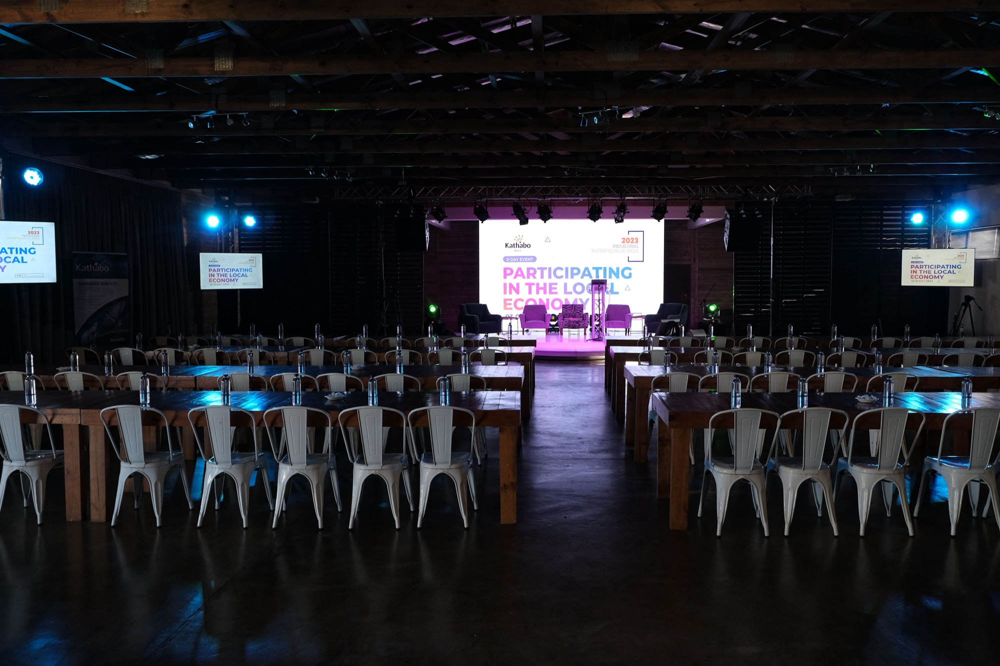

A women-led powerhouse of communications & events
Solution-oriented, strategic in delivery, and built to relieve our clients of the load.
360° thinking, delivered with care
Kathabo Media is a 360° communications and marketing company majoring in event production. Our comprehensive range of services is backed by some of the most innovative minds in the industry: corporate events, exhibitions and corporate golf days, anchored on corporate communications and media relations headed by our media team.
We have a diverse inventory that powers the work we curate. From human capital to resources such as audio-visuals, event infrastructure, videography, photography and décor, we build campaigns from creative conceptualisation to implementation, ensuring the end product is a brand any client wants to be associated with.
The Kathabo Group comprises full-time personnel across all sectors, with 80% of the workforce being female.

Produced by KathaboWhat we stand for
Our Vision Where we’re going
In the eyes of our clients, we want to be highly known and regarded as the greatest communications and marketing agency.
Our Beliefs How we work
Professionalism
Following ethical norms, being accountable and responsible.
Accuracy
A strong desire to provide outstanding customer service while being precise, every time.
Quality
Every aspect of the event meets or exceeds expectations, with a thorough grasp of the client’s objectives, goals and budget.
How it all started
Kathabo Media began as a vision to redefine event production in Bloemfontein. From our earliest days, we set out to build a company that delivers end-to-end communications and marketing under one roof.
Anchored on corporate events, exhibitions and golf days, we combined innovative thinking with unwavering professionalism to create memorable experiences for clients across South Africa.
- Executive office based in Mangaung, Free State
- Projects delivered across the Free State, Gauteng and the Northern Cape
- Group interests spanning communications & media, ICT, and cleaning & hygiene services
Lerato Rampana
Founder & CEO, Kathabo Group
A Standard Bank Top Woman Award recipient and Top BEE Company leader, Lerato Rampana is the visionary behind Kathabo Media. A graduate of Henley Business School Africa and a member of SAACI & EXSA, she combines strategic insight with creative flair.
Her corporate footprint includes Ernst & Young, FNB, SAB&T and the Edcon Group. Under her leadership, Kathabo Media has built a track record with diverse multinational clients such as Vodacom, Land Rover, FNB and De Beers. She remains a sought-after speaker on entrepreneurship and business leadership across national platforms.
How we bring your vision to life
A precision-driven approach that turns ideas into reality, in three clear phases.
Discovery & Planning Phase 1
Analysis
We dive deep into your objectives, audience and existing assets, mapping opportunities, challenges and success metrics.
Strategy
A strategic blueprint that aligns goals with timelines and budgets: key messages, engagement tactics and brand touchpoints.
Foundations
Brand guidelines, KPIs and logistical frameworks: the groundwork that keeps every phase running smoothly.
Design & Development Phase 2
Crafting
Strategy becomes concept: naming, theme ideation, mood boards and storyboards that drive your event’s look and feel.
Design
In-house graphic development, décor and audio-visual integration, with every asset rendered to the highest standard.
Development
We source and assemble every element: infrastructure, videography equipment, vendors, permits and digital platforms.
Implementation Phase 3
Execution
On event day our team becomes an extension of your brand: setup, technical rehearsals and on-site logistics.
Launch
From opening remarks to live social coverage, we orchestrate each moment for maximum engagement.
Optimisation
Performance is measured against your KPIs: feedback, analytics and debriefs so each event builds on the last.
Let’s craft your next experience together
From flagship conferences to brand activations and golf days. One team, end to end.
Get in touch